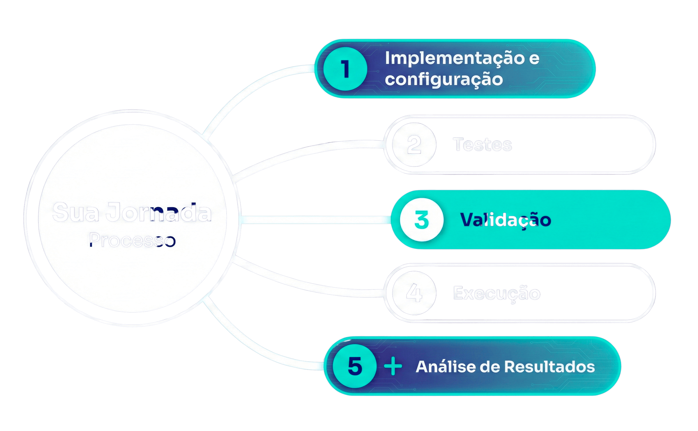

Customer Success terceirizado para infoprodutores.
Aumente o engajamento, reduza o reembolso e multiplique vendas.
é a taxa média de conclusão de cursos online
Alunos não ficam satisfeitos
Não conseguem o resultado prometido
Não geram depoimento e prova social
Não indicam seu produto
Sentem que fizeram uma escolha ruim
Não compram outros produtos
Uma empresa que nasceu para acompanhar os seus alunos. Descobrimos um segredo do mercado: Creators que têm CS vendem mais (e comprovamos isso).
Sou de Belo Horizonte, tenho 31 anos.
Sou de Belo Horizonte, tenho 31 anos.
Era você, seu conhecimento, um celular e um sonho.
Você cresceu e precisava mostrar seu produto para mais pessoas, montando uma equipe com Design, Copy e Web.
O mercado está com os olhos direcionados para VENDAS. Mas o lead ficou caro, mais exigente, e o investimento em tráfego precisou dobrar ou triplicar.
É por isso que nasceu essa posição:
Customer Success terceirizado com foco em RESULTADOS
Acompanhamento inicial e contínuo para garantir que o aluno use e aproveite todo o potencial do produto com sucesso desde o início.
Métrica que mede o nível de satisfação e lealdade do aluno com base na probabilidade de recomendação do seu produto.
Mapeamento de todas as etapas que o cliente percorre para oferecer uma experiência personalizada.
Ações estratégicas para identificar e recuperar alunos em risco de cancelamento, reduzindo a perda de receita.
Cuidar da percepção geral que o aluno tem da sua marca com base em todas as interações ao longo da jornada.
Indicador que mostra a "saúde" do cliente com base no seu engajamento, uso da solução e risco de cancelamento.
Ofertas de produtos ou serviços adicionais que geram mais valor ao aluno e aumentam a receita.
Valor total que um cliente gera para a empresa durante todo o relacionamento com o produtor.
Através de 4 funis estratégicos
Receber o aluno, gerar relacionamento e acompanhar os primeiros passos e resultados.
Manter o relacionamento para que ele continue engajado e finalize com resultados.
Trazê-lo de volta, alinhar compromissos com o objetivo que ele almejava.
Ofertar outro produto para que ele continue a jornada. Pedir prova social/indicações.
Reativo e Pontual
Dá assistência para problemas pontuais
Proativo e Estratégico
Faz o aluno ser produtivo e lucrativo
Resultados reais com Customer Success terceirizado
Em apenas 2 meses, impactando positivamente 19 produtos de Gabriel Becker.
Em outro produto do mesmo creator:
Cliente: Dra. Gessica - Comunidade com ~8 mil alunas
Ação: Campanha de renovação para turma "fria" de 856 alunas
Impacto: Aumento de +259% na taxa de renovação
Potencial de R$ 55.062 adicionais por turma com CS
Reengajamos 25,8% da turma em 46 dias
Processo completo de implementação do seu Customer Success

Entre em contato para terceirizar seu Customer Success
CNPJ: 59.243.132/0001-97
Tire suas dúvidas sobre a terceirização de Customer Success
É um serviço em que implementamos um time sênior de Customer Success para ajudar você a atender melhor seus alunos, fazer com que eles tenham uma jornada mais fluida, alcancem o resultado desejado e, com isso, você aumentar suas vendas para a sua base. Você foca no que faz de melhor: criar conteúdo.
Um time de CS experiente aumenta o engajamento e a fidelização dos alunos, resultando em mais vendas e recompra. Com um bom atendimento, você transforma seus alunos em defensores da sua marca.
Sim! Nossa equipe é composta por profissionais sêniores com vasta experiência em atender creators. Temos um histórico comprovado de aumento de receita para nossos clientes.
Entendemos essa preocupação. Porém, investindo em CS, você melhora a experiência do aluno. Isso significa menos reembolso e mais vendas. Comprovamos que cada real investido em CS pode gerar um retorno até 3 vezes maior em vendas. No final, a operação se paga com lucro e ainda você cuida dos seus alunos.
A implementação é rápida. Após uma breve análise do seu negócio, podemos ter o time pronto em até 30 dias. Assim, você começa a sentir os resultados bem rápido.
Nos reunimos com você para entender suas necessidades e adaptamos a estratégia e os processos do time conforme sua realidade. O alinhamento é fundamental para o sucesso.
Aceitamos pagamentos via PIX, boleto bancário e transferências bancárias. Você escolhe a opção que for mais conveniente.
Oferecemos um período de adaptação sem compromisso. Se você não estiver satisfeito nos primeiros meses, pode cancelar sem multa ou complicações.
Implementamos métricas de sucesso e feedback contínuo dos alunos. Você terá acesso a relatórios sobre a satisfação do cliente, garantindo que esteja sempre atualizado sobre o desempenho do time.
O serviço inclui implementação do processo de CS, estratégias personalizadas de atendimento aos seus alunos pelos canais de WhatsApp e e-mail, e acompanhamento dos resultados. Estamos aqui para garantir que seus alunos tenham a melhor experiência possível.